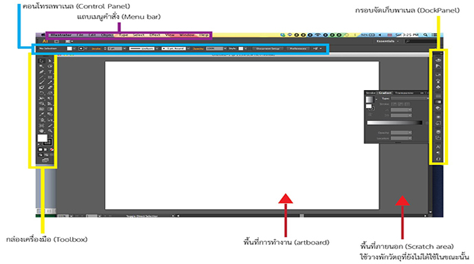

ส่วนประกอบของโปรแกรม Adobe illustrator CS6
เมื่อเริ่มต้นใช้งานโปรแกรม หน้าจอแรกที่พบจะประกอบด้วยส่วนประกอบต่าง ๆ ซึ่งมีหน้าที่การใช้งานที่แตกต่างกันออกไป เราจึงต้องทำความเข้าใจกับส่วนประกอบต่าง ๆ ของหน้าจอที่ปรากฏคร่าว ๆ ดังต่อไปนี้

1.แถบคำสั่ง (Menu Bar) เป็นแถบเมนูที่ใช้เก็บคำสั่งหลักต่าง ๆ ของโปรแกรมสามารถคลิกเมาส์เลือกคำสั่งบนแถบคำสั่งได้ หากคำสั่งไหนมีลูกศรอยู่ด้วย แสดงว่าเมื่อเรียกใช้คำสั่งนั้นจะมีคำสังย่อยเพิ่มขึ้นมาอีก คำสั่งในแถบเมนูมีทั้ง 9 กลุ่ม ดังต่อไปนี้
- File ทำงานเกี่ยวกับไฟล์ เช่น เปิด(Open) บันทึก (Save) และปิดไฟล์ (Close)
- ปรับวัตถุ เช่น ย้อนกลับการทำงาน (Undo/Redo) การตัด (Cut) การสำเนาหรือคัดลอก (Copy) การวาง ( Paste) และการกำหนดค่าพื้นฐานของโปรแกรม (Preference)
- object บริหารจัดการวัตถุ เช่น จัดกลุ่ม (Group) จัดลำดับ (Arrange) และ รับแต่งวัตถุ (Transform)
- Type บริหารจัดการตัวอักษร เช่น ตัวอักษร (Font) และการปรับขนาด (Size)
- select เลือกวัตถุแบบต่าง.ๆ มักใช้ร่วมกับกล่องเครื่องมือ
- Effect การกำหนดลูกเล่นพิเศษในการตกแต่งวัตถุ
- View แสดงขึ้นงานในรูปแบบต่าง ๆ เช่น การย่อ/ขยายชิ้นงาน (Zoom In/Out)
- Window จัดการหน้าต่างที่ปรากฏบนหน้าจอโปรแกรม เพื่อช่วยให้ทำงานได้สะดวกขึ้น
- Help รวบรวมวิธีการใช้งานและคำแนะนำเกี่ยวกับโปรแกรม Ilustrator
2. แถบการควบคุม (Control Pane) เป็นแถบตัวเลือกสำหรับกำหนดค่าต่าง ๆ ของวัตถุเพื่ออำนวยความสะดวกแก่ผู้ใช้ให้สามารถกำหนดค่าสี ขนาด ตำแหน่ง และคุณสมบัติต่างๆของวัตถุที่เลือกได้ง่ายขึ้น มักจะปรากฎอยู่ด้านบนหน้าต่างโปรแกรม
3. ปุ่มควบคุมหน้าต่าง (Control Button) ใช้ย่อ/ขยาย พักหน้าต่างโปรแกรม และปิดโปรแกรม
4. กล่องเครื่องมือ (Toolbox) เป็นส่วนที่เก็บรวบรวมเครื่องมือที่ใช้ในการสร้าง การปรับแต่ง และการแก้ไขวัตถุ ซึ่งมีไอคอนให้สามารถเรียกใช้งานได้ง่ายและรวดเร็ว โดยเมื่อเปิดโปรแกรมขึ้นมาส่วนของกล่องเครื่องมือจะเป็นไอคอนหนึ่งแถวถูกจัดเก็บอยู่ในกรอบจัดเก็บ(Dock) ทางซ้าย ซึ่งสามารถคลิกเมาส์แล้วลากวางตำแหน่งใดก็ได้บนหน้าจอกลุ่มเครื่องมือต่าง ๆ ในการจัดการกับวัตถุแบ่งได้ดังนี้
5. พื้นที่การทำงาน (Art Board) ใช้สำหรับวางวัตถุ
6. พาเนลควบคุมการทำงาน ( Panel) พาเนลควบคุมการทำงาน (Panel) เป็นหน้าต่างย่อยที่รวบรวมคุณสมบัติการทำงานของเครื่องมือต่าง ๆ ให้ผู้ใช้เลือกปรับแต่งการใช้งานได้ง่าย ๆ มีทั้งหมด 34 พาเนล
การเปิด/ปิดพาเนล
เปิดใช้งานพาเนลโดยให้คลิกที่รูปไอคอนพาเนลที่ต้องการ และเมื่อต้องการปิดพาเนล
ก็ให้คลิกซ้ำที่รูปไอคอนนั้นอีกครั้ง หรือคลิกนุ่มต้านบนขวาของพาเนลก็ได้
การแยก/รวมพาเนล
เพื่อเพิ่มพื้นที่การทำงาน สามารถยุบพาเนลที่ยึดกับแผงพาเนลและคอลัมน์ให้แสดงในรูปไอคอน ซึ่งเมื่อต้องการใช้งานพาเนลใดให้เปิดขึ้นมาทำงานเฉพาะพาเนลนั้น
7. แถบแสดงผล (Status Bar) ใช้บอกสถานะต่าง ๆเช่น ครื่องมือที่ใช้งานเปอร์เซ็นต์ขนาดหน้าจอ หน้าที่กำลังทำงานอยู่
 
|